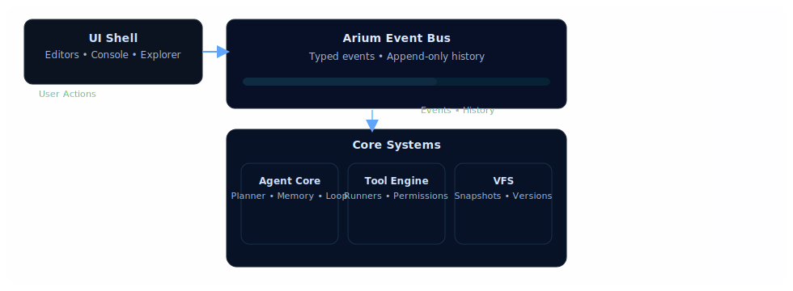
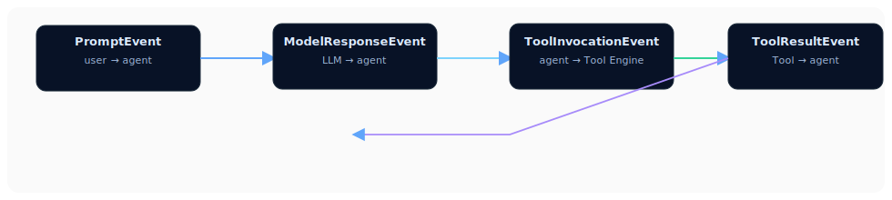

Arium — SVG diagrams
Три SVG-діаграми для документації проєкту Arium.
1) High-Level Architecture
Схема: UI → Event Bus → Core (Agent, Tool Engine, VFS, Model Adapter)

2) Event Bus Flow (detailed)
Послідовність подій: Prompt → ModelResponse → ToolInvocation → ToolResult → VFSChange

3) Agent Reasoning Loop (detailed)
Ітеративний цикл: Plan → Generate → Execute → Observe → Repeat

Діаграми збережені як окремі SVG файли у директорії assets/diagrams/. Можна використовувати в документації або на веб-сторінках.